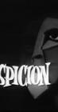

What is this site?
Stephen's Profile
Browser Extension
Stephen Klancher
Recent
Overall
Year Overview
Series
Lists
Suspicion
List contains: 42 items, 21 hours.
Seasons:
1
|
Title Search (4+ characters):
Group:
None
Example Group: Me and Stephen
Who's seen it:
No filter
Everyone
No One
Anyone
Anyone Has Not
Who's commented:
No filter
Everyone
No One
Anyone
Anyone Has Not
Netflix:
No Filter
Available for Instant Watch
Netflix Link Known
Netflix Link Unknown
Missing Data:
No Filter
Runtime
Season
Release Year (YYYY) or Decade (YYYx):
Sort:
Normal
Newest Episodes First
Episodes in Order
Recently Watched First
Watched in Order
Newest Releases First
Releases in Order
Stephen Klancher
...has seen 0
...has not seen 21 hours
Timeline

Season 1
Four O'Clock (1957)
Airs on 1957-09-30
S1 - E1 of
Suspicion
Stephen Klancher
:
Murder Me Gently (1957)
Airs on 1957-10-07
S1 - E2 of
Suspicion
Stephen Klancher
:
The Other Side of the Curtain (1957)
Airs on 1957-10-14
S1 - E3 of
Suspicion
Stephen Klancher
:
Hand in Glove (1957)
Airs on 1957-10-21
S1 - E4 of
Suspicion
Stephen Klancher
:
The Story of Marjorie Reardon (1957)
Airs on 1957-10-28
S1 - E5 of
Suspicion
Stephen Klancher
:
Diary for Death (1957)
Airs on 1957-11-04
S1 - E6 of
Suspicion
Stephen Klancher
:
Heartbeat (1957)
Airs on 1957-11-11
S1 - E7 of
Suspicion
Stephen Klancher
:
The Sparkle of Diamonds (1957)
Airs on 1957-11-18
S1 - E8 of
Suspicion
Stephen Klancher
:
The Flight (1957)
Airs on 1957-11-25
S1 - E9 of
Suspicion
Stephen Klancher
:
Rainy Day (1957)
Airs on 1957-12-02
S1 - E10 of
Suspicion
Stephen Klancher
:
The Deadly Game (1957)
Airs on 1957-12-09
S1 - E11 of
Suspicion
Stephen Klancher
:
Doomsday (1957)
Airs on 1957-12-16
S1 - E12 of
Suspicion
Stephen Klancher
:
The Dark Stairway (1957)
Airs on 1957-12-23
S1 - E13 of
Suspicion
Stephen Klancher
:
Someone Is After Me (1958)
Airs on 1958-01-06
S1 - E14 of
Suspicion
Stephen Klancher
:
Lord Arthur Savile's Crime (1958)
Airs on 1958-01-13
S1 - E15 of
Suspicion
Stephen Klancher
:
End in Violence (1958)
Airs on 1958-01-20
S1 - E16 of
Suspicion
Stephen Klancher
:
Comfort for the Grave (1958)
Airs on 1958-01-27
S1 - E17 of
Suspicion
Stephen Klancher
:
Meeting in Paris (1958)
Airs on 1958-02-10
S1 - E18 of
Suspicion
Stephen Klancher
:
A Touch of Evil (1958)
Airs on 1958-02-17
S1 - E19 of
Suspicion
Stephen Klancher
:
If I Die Before I Live (1958)
Airs on 1958-02-24
S1 - E20 of
Suspicion
Stephen Klancher
:
The Hollow Man (1958)
Airs on 1958-03-03
S1 - E21 of
Suspicion
Stephen Klancher
:
A World Full of Strangers (1958)
Airs on 1958-03-10
S1 - E22 of
Suspicion
Stephen Klancher
:
The Eye of Truth (1958)
Airs on 1958-03-17
S1 - E23 of
Suspicion
Stephen Klancher
:
Voice in the Night (1958)
Airs on 1958-03-24
S1 - E24 of
Suspicion
Stephen Klancher
:
Diagnosis: Death (1958)
Airs on 1958-03-31
S1 - E25 of
Suspicion
Stephen Klancher
:
The Bull Skinner (1958)
Airs on 1958-04-07
S1 - E26 of
Suspicion
Stephen Klancher
:
The Girl Upstairs (1958)
Airs on 1958-04-14
S1 - E27 of
Suspicion
Stephen Klancher
:
Fraction of a Second (1958)
Airs on 1958-04-21
S1 - E28 of
Suspicion
Stephen Klancher
:
The Way Up to Heaven (1958)
Airs on 1958-04-28
S1 - E29 of
Suspicion
Stephen Klancher
:
The Woman with Red Hair (1958)
Airs on 1958-05-05
S1 - E30 of
Suspicion
Stephen Klancher
:
Protg (1958)
Airs on 1958-05-12
S1 - E31 of
Suspicion
Stephen Klancher
:
The Velvet Vault (1958)
Airs on 1958-05-19
S1 - E32 of
Suspicion
Stephen Klancher
:
The Slayer and the Slain (1958)
Airs on 1958-05-26
S1 - E33 of
Suspicion
Stephen Klancher
:
Death Watch (1958)
Airs on 1958-06-02
S1 - E34 of
Suspicion
Stephen Klancher
:
The Man with the Gun (1958)
Airs on 1958-06-09
S1 - E35 of
Suspicion
Stephen Klancher
:
The Woman Turned to Salt (1958)
Airs on 1958-06-16
S1 - E36 of
Suspicion
Stephen Klancher
:
Eye for Eye (1958)
Airs on 1958-06-23
S1 - E37 of
Suspicion
Stephen Klancher
:
Return from Darkness (1958)
Airs on 1958-06-30
S1 - E38 of
Suspicion
Stephen Klancher
:
The Devil Makes Three (1958)
Airs on 1958-07-07
S1 - E39 of
Suspicion
Stephen Klancher
:
The Imposter (1958)
Airs on 1958-07-14
S1 - E40 of
Suspicion
Stephen Klancher
:
The Death of Paul Dane (1958)
Airs on 1958-07-21
S1 - E41 of
Suspicion
Stephen Klancher
:
The Last Town Car
Airs on 2023-02-14
S1 - E42 of
Suspicion
Stephen Klancher
:
Watched an episode not known by IMDb?
Season:
-
Episode:
Date:
Comment: